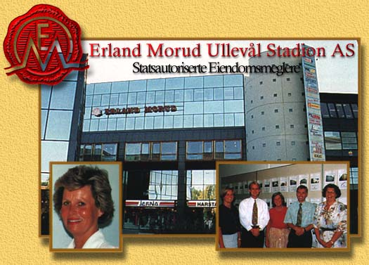

Erland Morud Ullevål Stadion AS ble etablert i 1986 under ledelse
av statsautorisert eiendomsmegler Janne Morud Sandberg, som har over 20 års bransjeerfaring.
Det er 7 personer ansatt ved kontoret, hvorav 3 er eiendomsmeglere.
Vi disponerer topp moderne kontorlokaler i Ullevål Stadion-bygget
og er den ledende eiendomsmeglerforretningen i Oslo nord/vest.

Erland Morud Ullevål Stadion AS
Sognsvn. 75 C, 0855 Oslo
Telefon 22 23 03 30 - Telefax 22 95 22 73